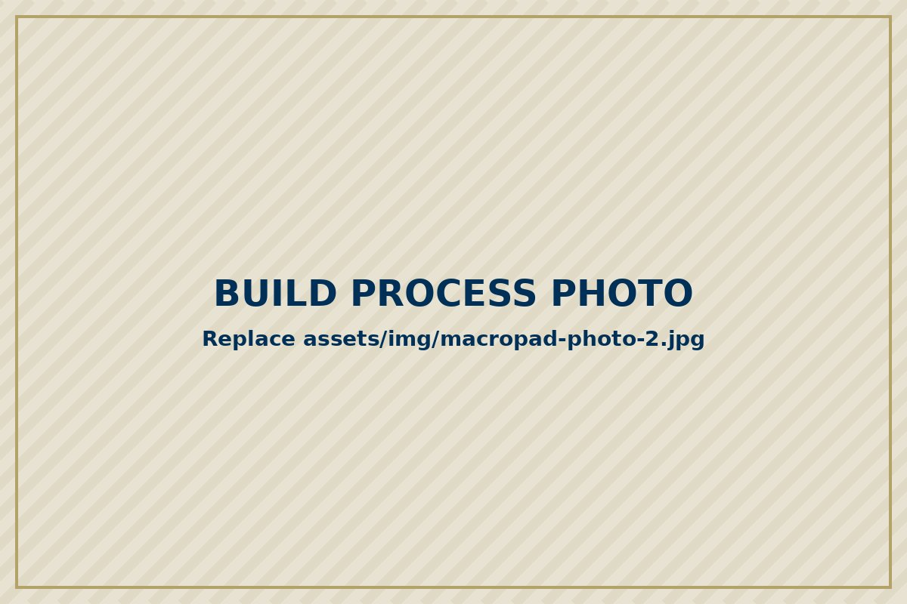
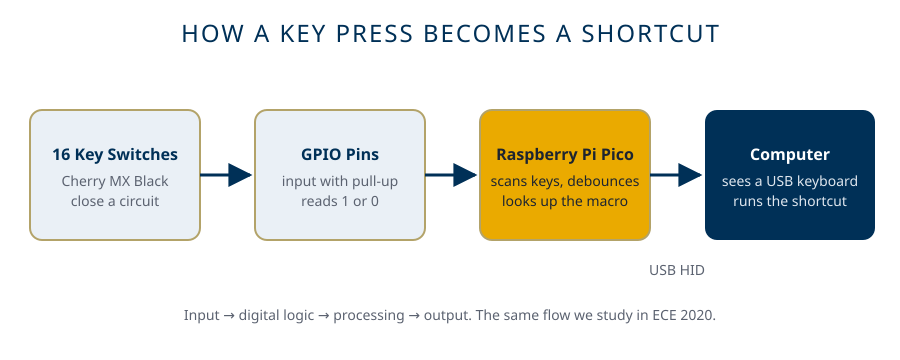

The Problem
Students repeat the same computer tasks all day. Copy and paste. Switch windows. Mute on calls. Take screenshots for lab reports. Each one is a shortcut, and many need two or three keys at once. Store bought macro pads solve this but they cost a lot and you cannot see inside them. My question was simple. Can I build my own shortcut keyboard from basic parts and make it work as well as one from a store?
The Process

I kept the design small on purpose. Sixteen keys in a four by four grid, with no knobs or screen. A smaller scope meant I could actually finish it and make it work well.
For parts I chose a Raspberry Pi Pico because it is cheap, well documented and can act as a USB keyboard. I used Cherry MX Black switches, which are linear and a little heavy so I do not press them by accident. Black XDA keycaps go on top.
I made the case with the Parametric Macropad customizer on MakerWorld by jkrishna and printed it at the Hive makerspace. It prints in two parts. A top plate holds the switches and a bottom tray holds the Pico.

Each switch is just a button that closes a circuit. I wired the switches to the Pico with one GPIO pin per key / as a 4x4 matrix. The pins are inputs with pull up resistors, so a pin reads 1 when a key is up and 0 when it is pressed. I programmed the Pico in CircuitPython / KMK / QMK. The code scans the keys, debounces each press and sends the matching shortcut over USB. The computer sees a normal keyboard, so no drivers are needed.

The Outcome
The finished macropad works. All 16 keys register and each one runs its shortcut. I use it every day for copy, paste, undo, screenshots and media controls. Tasks that took two hands now take one press. Add one real result, like something that broke in testing and how you fixed it.
What I Learned
This project connected my classes to something real. The on and off states of each pin are the same digital logic I study in Digital System Design. I also learned how to read a pinout, plan a build around real parts and debug when the problem could be hardware or software. Most of all I learned to keep scope realistic. A small project that works beats a big one that does not.
What's Next
I want to add a volume knob and RGB lighting. Later I would like to design my own circuit board so there are no loose wires at all.